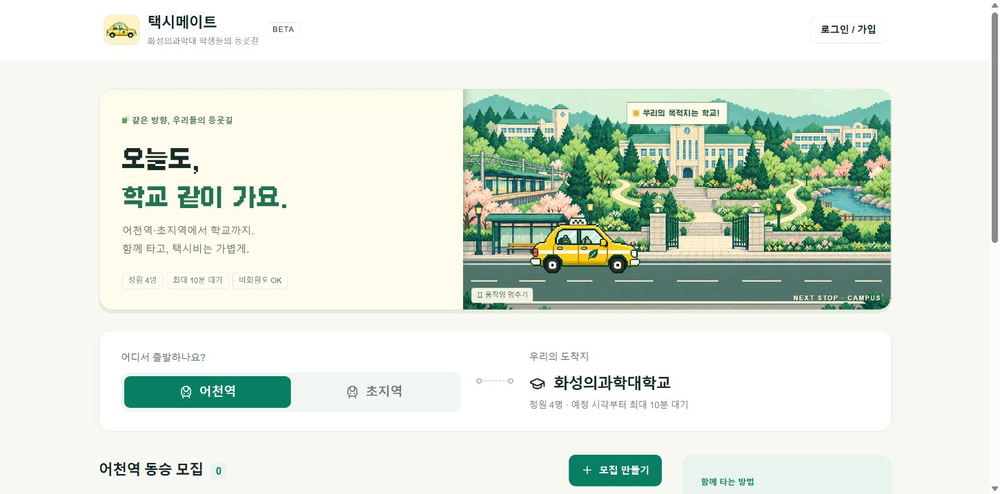

member work / campus service
택시메이트
어천역·초지역에서 화성의과학대학교까지, 같은 시간에 등교하는 학우를 연결하는 택시 동승 웹앱입니다. 메이커스 회장 문서정이 수원에서 화성으로 통학하며 느낀 배차 간격과 택시비 부담을 계기로 기획·제작했습니다.
출발 시간에 맞춰 모집·참여하고 채팅으로 만날 장소를 조율할 수 있습니다. 정원은 모집자를 포함해 4명이며 비회원 이용도 가능합니다.
택시메이트 열기 ↗